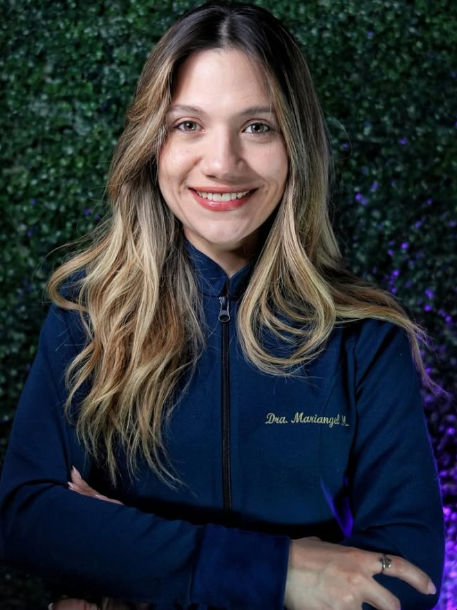
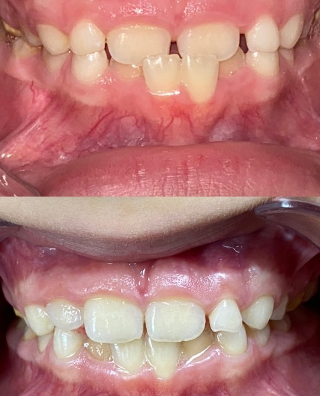
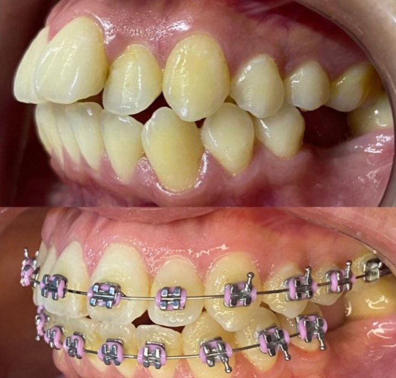

Odontóloga de profesión, humana de corazón
Odontología integral en Buenos Aires: estética, ortodoncia y prevención. Y sé lo que es sentarse del otro lado del sillón con un poco de miedo.
Buenos Aires, Argentina · Turnos por mensaje directo

Tratamientos
Lo que hacemos en el consultorio
Una mirada integral de tu boca: desde el control de rutina hasta alinear tu sonrisa.
Ortodoncia
Brackets para alinear los dientes de a poco, con controles periódicos durante todo el tratamiento.
Ortopedia
Acompañamos el crecimiento de los maxilares en los más chicos, cuando todavía están a tiempo de corregirse.
Estética dental
Tratamientos para que te sientas cómodo con tu sonrisa. Te contamos qué opciones tenés en la consulta.
Prevención
Controles y limpiezas para evitar sarro y caries antes de que se conviertan en un problema.
Casos reales
Alineando de a poco
Algunos avances de pacientes del consultorio, publicados en el Instagram de la Dra.


Imágenes publicadas con autorización de los pacientes. Cada tratamiento depende del diagnóstico y los resultados varían de una persona a otra.
Sobre mí
Detrás de este ambo también hay una persona que le tiene miedo al odontólogo.
Pero te prometo que conmigo será diferente
Soy Mary, odontóloga en Buenos Aires. Me dedico a la odontología integral, con foco en estética, ortodoncia y prevención. Sé lo que se siente esperar en la sala con nervios, así que trato de que cada consulta sea tranquila y que entiendas qué te estamos haciendo.
- Formación continua. Participo de congresos de la especialidad, como el Congreso de la AOA.
- Predico con el ejemplo. Me reviso todos los días para no tener sarro ni caries. Sí, de verdad.
- Amo el café, aunque sé que no es lo mejor para la salud bucal. Nadie es perfecto.
Turnos
Cómo pedir tu turno
Sin formularios ni llamados. Me escribís y lo coordinamos.
Escribime
Mandame un mensaje directo por Instagram contándome qué te pasa o qué te gustaría mejorar.
Coordinamos
Te respondo con los días y horarios disponibles y te paso la dirección del consultorio.
Primera consulta
Revisamos tu boca, te explico lo que veo y armamos juntos el plan que necesitás.
Preguntas frecuentes
Lo que más me preguntan
¿Cómo saco un turno?
Escribime por mensaje directo en Instagram (@_doctoramary). Te respondo con los horarios disponibles y te paso todos los datos para la consulta.
Le tengo miedo al odontólogo. ¿Qué hago?
Contámelo cuando me escribas. Yo también le tengo miedo, así que no te voy a juzgar. Vamos a tu ritmo y te explico cada paso antes de hacerlo.
¿Dónde atendés?
En Buenos Aires. Cuando coordinamos el turno te paso la dirección exacta del consultorio.
¿Atendés chicos?
Sí. La ortopedia se hace justamente en etapa de crecimiento, así que es un buen momento para hacer una primera consulta.
¿Trabajás con obras sociales o prepagas?
Consultame por mensaje con el nombre de tu obra social o prepaga y te digo cómo podemos hacer.
¿Hace cuánto que no te hacés un control?
Escribime, contame qué necesitás y buscamos un turno que te quede cómodo.